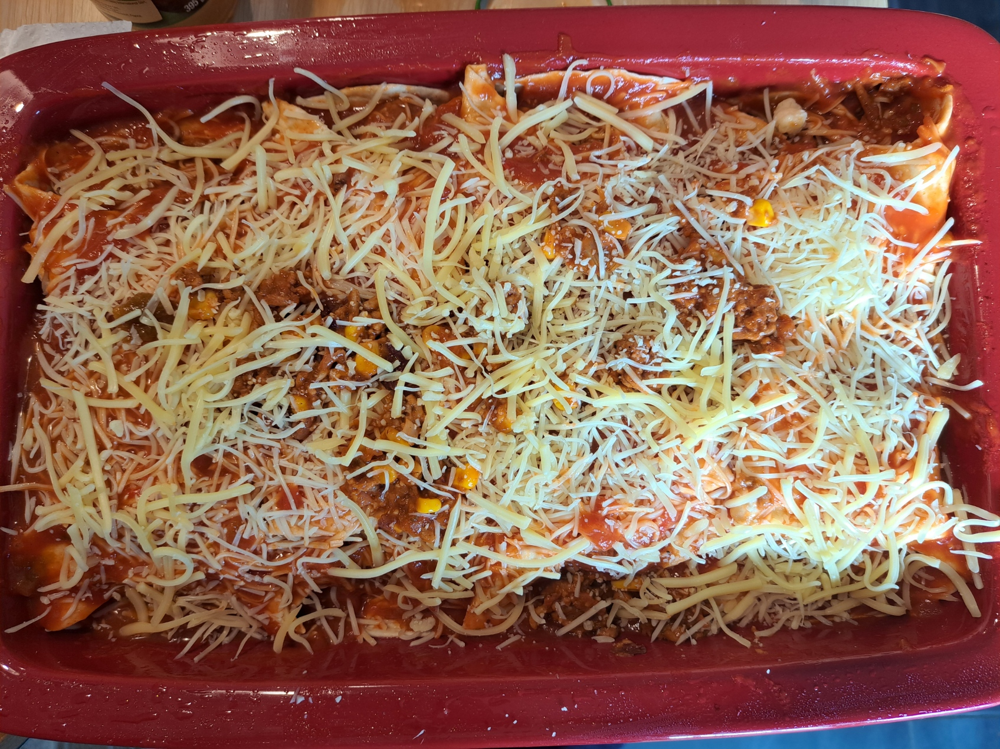

Vegetarian Enchiladas

Instructions
1
Cook the oignon
Slice the oignon, cook it with vegetal oil and a part of the sauce
2
Cook the haché
Cook the haché with the oignons + red beans + part of the sauce
3
Arrange in the Baking Dish
Roll each wrap with the oignon/haché mix + slice of cheddar + the cooked haché + maïs. Dispose in the gratin plate. Do it again until there is no more left
4
Add gratted cheese onto of the preparation
Add also the rest of the sauce
6
Bake
Bake in the oven at 200 °C (390 °F) for 30–35 minutes, until the cheese is melted and golden.